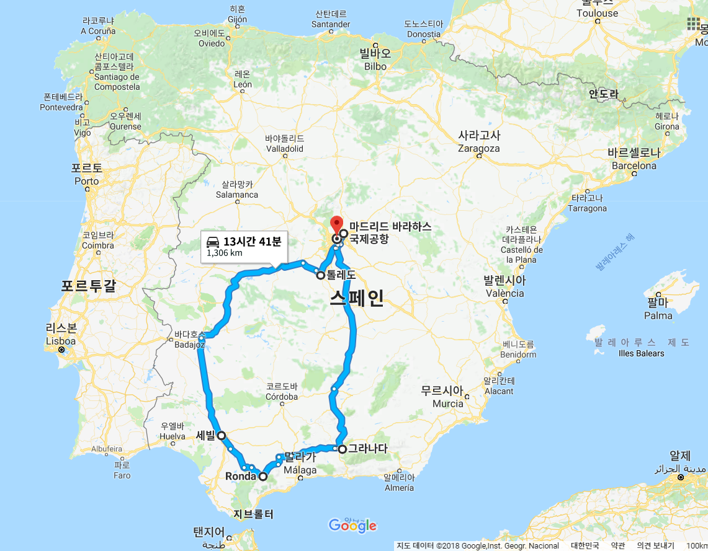

스페인

| 2018년 05월 01일 |
인천 (ICN), 스페인 마드리드 (MAD), 톨레도 |
| 05월 02일 | 산토토메 성당, 톨레도 대성당, 소코도베르 광장, 세비야 |
| 05월 03일 | 스페인 광장, 세비야 대성당/히랄다 탑, 론다 |
| 05월 04일 | 누에보 다리, 엘타호 협곡, 헤밍웨이 산책로, 투우장, 그라나다, 이사벨라 라 카톨리카 광장, 사크로몬테 플라맹코, 알바이신 전망대 |
| 05월 05일 | 알람브라, 헤네랄리페, 알카사바, 나스르 궁, 마드리드 |
| 05월 06일 | 국립 소피아 왕비 예술센터, 보틴 레스토랑, 프라도 미술관, MAD |
| 05월 07일 | 인천 (ICN) |

| 2018년 12월 28일 |
인천(ICN), 바르셀로나(BCN) |
| 12월 29일 | 가우디 투어, 카사밀라, 구엘공원(정수시설), 구엘성당(꼴로니아 구엘), 바로셀로나 해변, 성가족성당 |
| 12월 30일 | 피카소 미술관, 산타마리아 델 마르 성당, 후안 미로 공원, 아레나몰, 몬주익 성, 올림픽 경기장(황영조), 호안 미로 미술관, 카탈루냐 미술관, 몬주익 분수, 까사 바트요, 모리스 맥주공장 |
| 12월 31일 | 몬세라트 수도원, 산호안 푸니쿨라, 몬세라트 정상, BCN |
| 01월 01일 | ICN |
느낀 점, 배운 것
- 국립 소피아 왕비 예술센터에서 닥스훈트를 보고 돈까스도 했다. (소운이의 기억, 닥스훈트 흉내 사진도 찍었다.)
- 스페인은 고대로마, 카톨릭, 아랍 문명의 교차점으로 다양한 문화를 모두 수용하고 있다. 기본적으로는 카톨릭 국가이다.
- 스페인의 음식은 한국 음식과 유사한 면이 꽤 있다. 감자 오믈렛, 감바스 알아히요(새우) 등 대부분 우리 입맛에 잘 맞는다. 마늘을 식재료로 사용하는 것도 우리나라와 비슷하다.
- 알람브라 궁전 주위 식당은 별로다. 차라리 내부 ?? 식당에서 알람브라 정원을 보며 식사하는 것이 낫다.
- 렌트 시 자차를 반드시 포함해야 한다. 스페인에서는 주차 시 차가 부딪히는 것을 당연하게 생각한다.
- 유럽의 구 시가지는 차를 가지고 갈 경우 주차 및 경로에 대한 세심한 계획이 필요하다. (톨레도, 세비야 등) 길이 좁아 운전이 매우 어렵다. 대부분 일방통행이고 차가 벽에 부딪히기 쉽다. 렌트 시 자차를 넣어야하는 이유 중 하나다. 구글맵이 정확한 위치를 잡아 주지 못한다. 사전에 지도에서 정확한 길을 확인하고 진입해야 한다. 만약, 유럽의 구시가지 운전을 경험하고 싶다면 소형차로 렌트하는 것이 유리하다.
- 추월 차선은 추월할 때만 주행해야 한다.
- 세비야 구 시가지의 카사 1800 호텔은 정말 추천하고 싶다. 단, 좁은 골목길 운전을 각오해야 한다. 아니면, 차량은 구시가지 입구의 주차창에 주차하고 10분 정도 걷어도 된다.
- 마드리드의 보턴 식당은 당일 예약은 안된다. 다만, 일반적인 경우 예약없이 점심 오픈 전 10분 전에 도착해도 입장이 가능하다.
스페인의 역사 / 문화
로마, 이슬람, 카톨릭 문화가 모두 있다.이슬람 교도를 죽이기 위한 마녀 사냥
혼혈, 기후 덥다. 대항해 시대에는 전세계에 식민지를 가지고 있었다. 특이 아메리카 대륙에 넓은 식민지를 가지고 있었으며, 지금도 아메리카 대륙에는 스페인어가 널리 사용되고 있다.
세비야
중세 유럽 문화의 중심지. 모짜르트의 오페라? 세빌리아의 이발사에서 세빌리아는 세비야를 가리킨다.이슬람 건축인 히랃다 탑, 콜럼버서의 묘가 있는 세비야 대성당, 스페인 광장 등이 유명하다.
예술
- 프라도 미술관, 국립 소피아 왕비 예술센터
- 벨라스케즈의 시녀들:: 프라도미술관 소장. 서양 미술사에서 가장 중요한 작품의 하나. 회화의 신학, 예술의 철학이란 평이 있다.
- 피카소:: 게르니카
- 안토니 가우디:: 고전에서 현대로 넘아가는 시기의 천재 건축가. 석기를 이용하여 모더니즘 건축을 구현했다. 성 가족 성당 (사그라다 파밀리아 ), 구엘공원, 카사 바트요 등을 설계함.
음식
한국인이랑 식성이 비슷하여 많은 음식이 한국인 입맛에 잘 맞는다. 서양인들이 싫어하는 마늘도 주 재료로 사용한다.- 하몽: 돼지 앞다리를 숙성시켜 만든 음식. 도토리를 먹고 자라는 이베리코 흑돼지 하몽이 가장 유명하다. 마치 우리 나라의 한우와 같다.
- 주요 요리: 감바스 알 아히요, 또띠아, 상그리아, 해물빠에야, 가스파쵸(토마토스프)
- 또띠아: 스페인식 오믈렛. 감자 오물렛이 유명하다 (또띠아 데 파타타).
- 멕시코 음식 또띠아: 옥수수가루 또는 밀가루를 펴서 만든 빵을 가리키며, 다른 요리를 싸서 타코를 만들어 먹는데 쓴다.
- 두 말의 어원은 모두 케이크란 뜻의 스페인어 또르따(Torta)에서 유래했다.
알함브라 궁전
........
스페인 연표 (연표를 움직이려면 두 손가락 이용)
최초 작성: 2018년 12월 11일
최종 수정: 2018년 12월 11일
최종 수정: 2018년 12월 11일